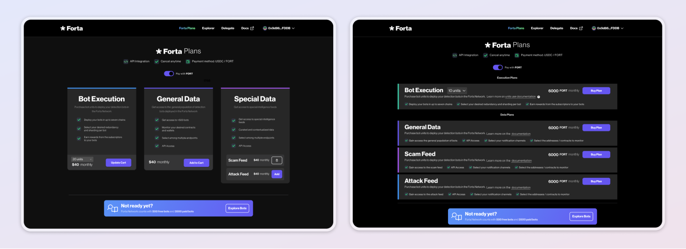
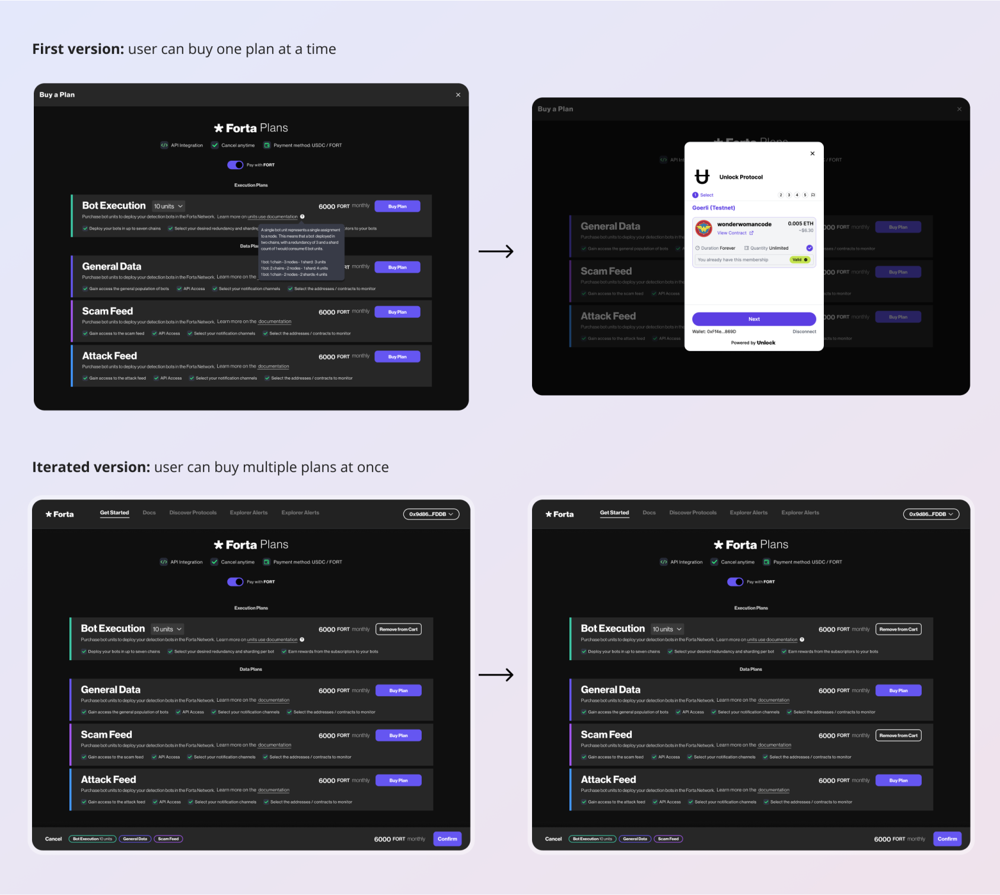
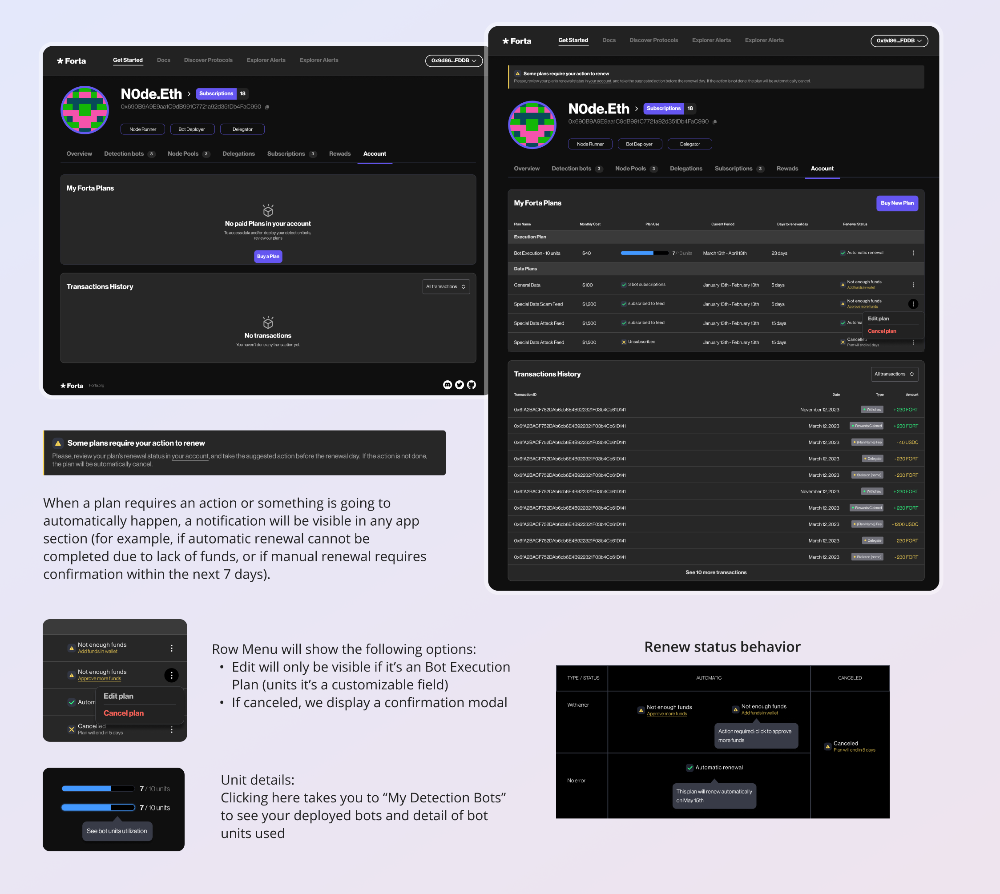

Forta: The largest network of security intel in Web3
ARG 2023
Forta is a network and a community of leading security experts contributing to detect scams and threats.
They continuously enhance their detection capabilities with machine learning, ensuring heightened efficiency and agility. Incentivizing community participation, they offer rewards to maintain code quality at its zenith. The integrity of their internal economy is upheld through the utilization of the FORT token.
The Goal
Forta had no subscription plans and users could subscribe to any bot and integrate unlimitedly with their own bots. The idea was to offer different plans and prices depending on the user's needs and the use of the software.
To support this, we needed to offer 3 different plans: General Data, Special Data and Bot Execution.
The bot execution plan was intended for developers and this plan will also have the option to choose how many units they will need to use.
The special data plan will have two types of feeds and the user should be able to choose one or both.
Users can choose as many plans as they need and upgrade at any time.
Team
- Core Team: Me as the Lead Designer and a Project Manager
- Collaborators: The development team provided technical feedback to ensure feasibility.
Brainstorming
The first step was to brainstorm different layouts and also evaluate the ideal flow.
Although it was recommended from a usability point of view that users can purchase several plans at the same time, due to technical difficulties the first version will only support purchasing one plan at a time, and future iterations will be planned to include the purchase of multiple plans.
User profile
User’s profile could be empty (with no plan or history) or filled with data.
When viewing a bot execution plan, they should see how many units they have available and how many they already have in use.
In addition, feedback on the status of the plan was included with alerts to avoid problems such as the automatic cancellation of a plan due to lack of payment (when the user would have wanted to prevent it).
User Flow
These are some interface behaviors and user experience definitions:
- User can access payment directly from the plan preview in their profile.
- User would access payment modal after plan selection
- If clicking “Buy new plan” the plans already ongoing will not appear in the list
- Users could access a new API key modal